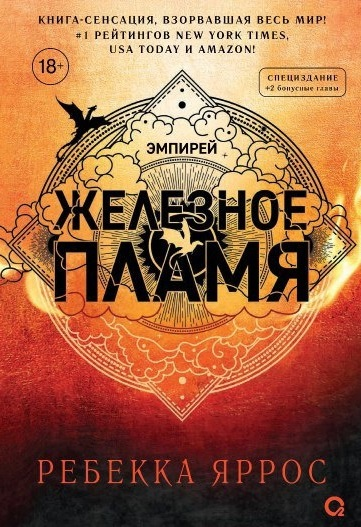
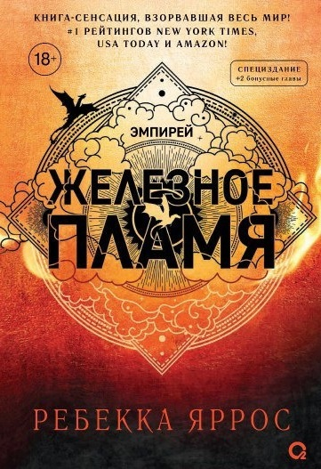
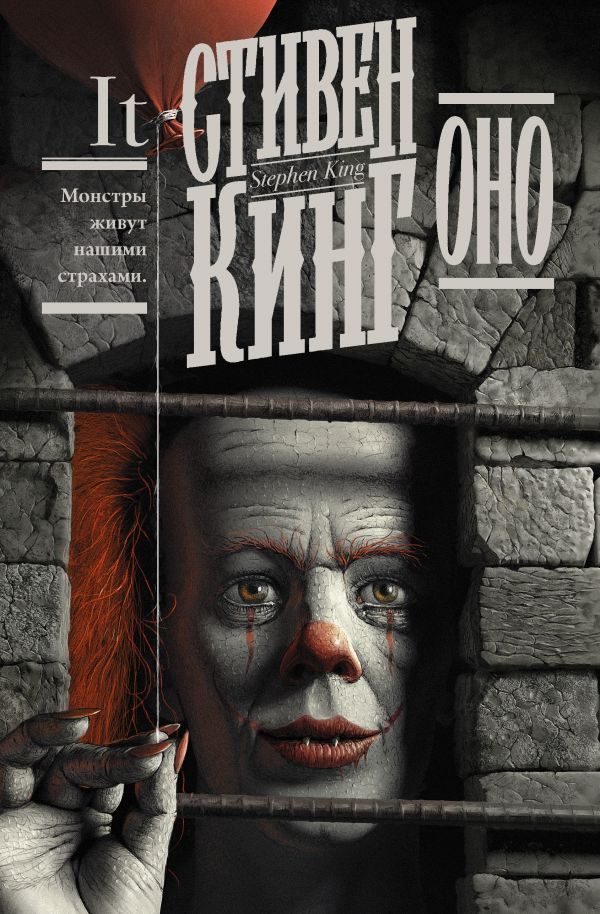
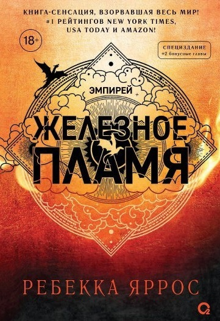

Последнее десятилетие стало для литературы временем настоящей революции. Книги перестали быть просто текстом на бумаге — они превратились в культурные катализаторы, рождающие блокбастеры, горячие дискуссии в соцсетях и целые читательские вселенные. Это эпоха, когда алгоритмы начали рекомендовать нам романы, а книжные клубы переехали в TikTok. Давайте оглянемся на главные явления, которые определяли книжный мир с 2015 по 2025 год.
За последнее десятилетие книжный рынок претерпел значительные изменения. Если в 2015 году доминировали традиционные бумажные издания, то к 2025 году электронные и аудиокниги заняли более 40% рынка.
Наблюдается устойчивый рост интереса к нон-фикшн литературе: книги по психологии, саморазвитию и бизнесу стали настоящими бестселлерами. Особенно заметен всплеск популярности после 2020 года.
Ключевые изменения: